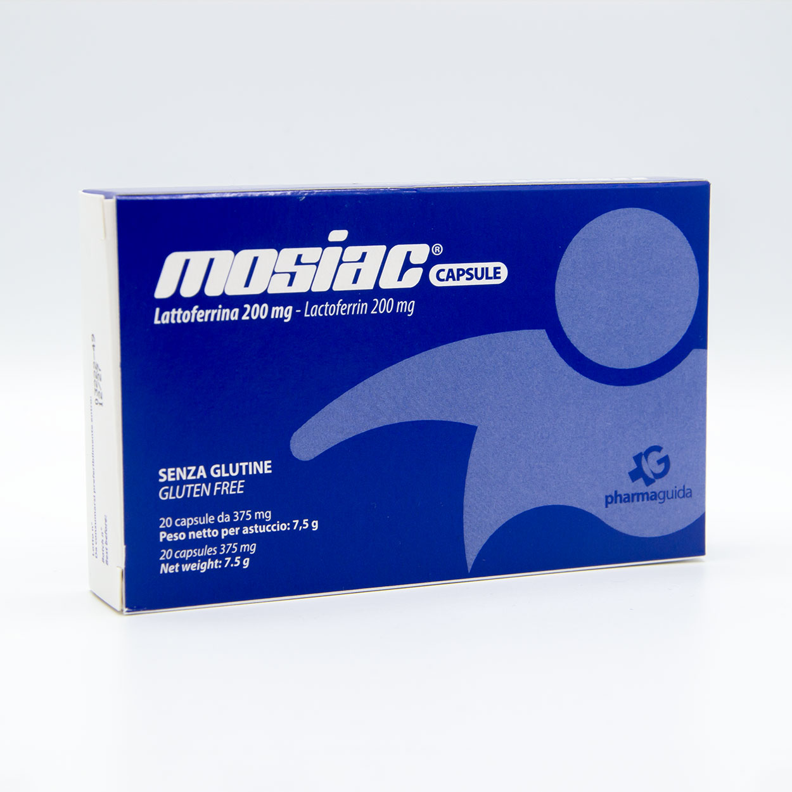
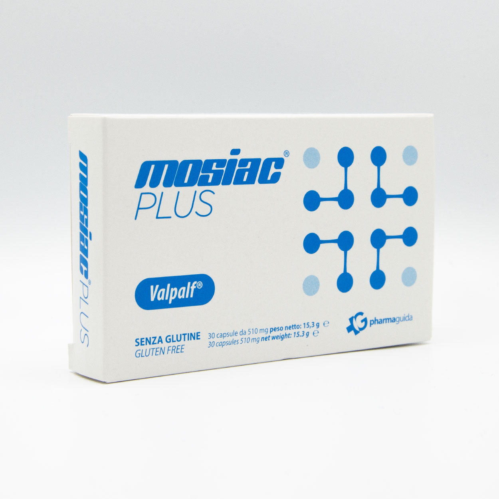
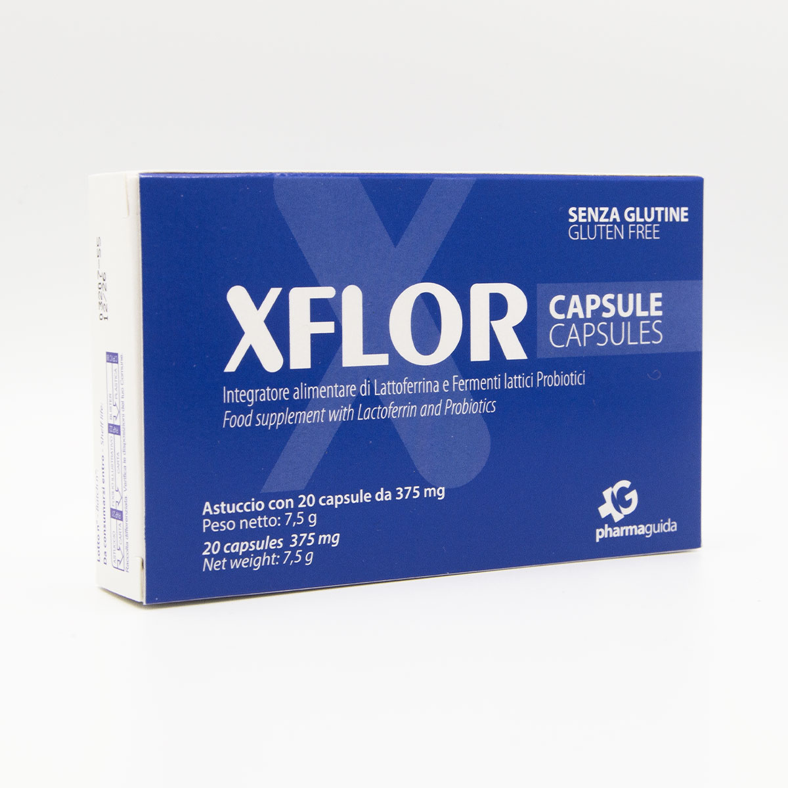
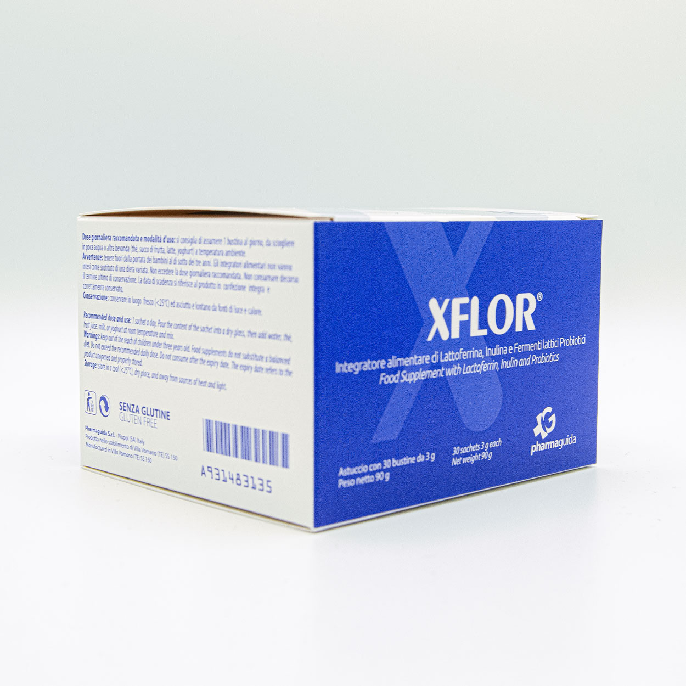
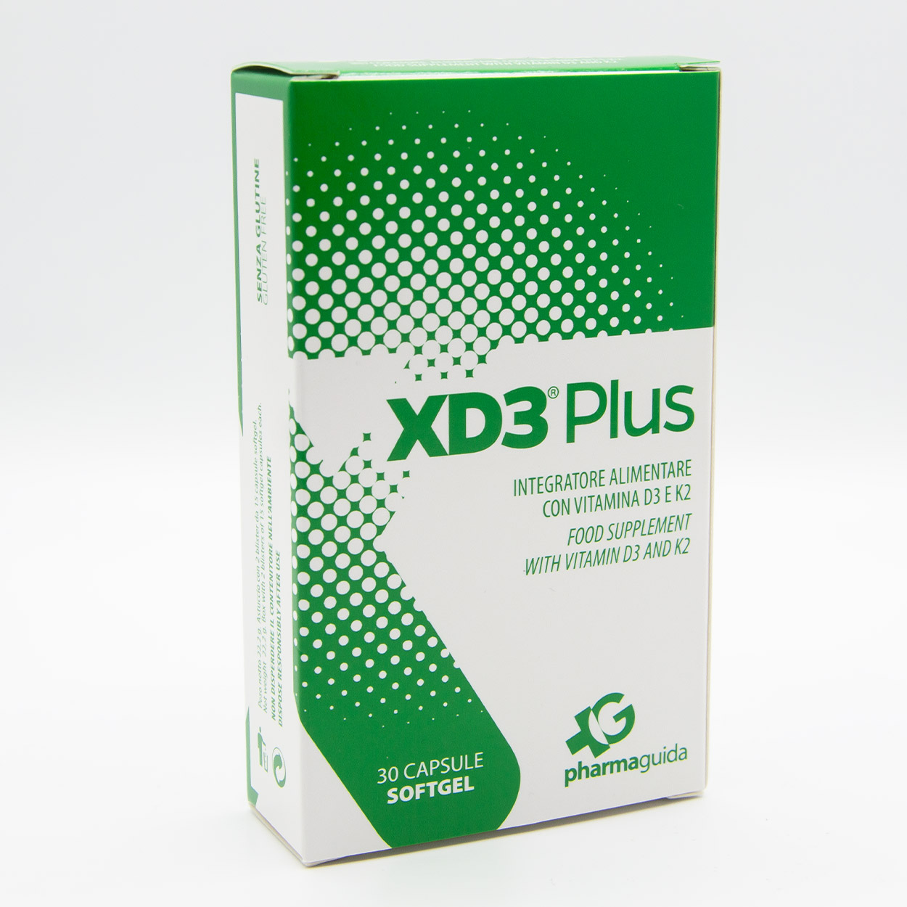
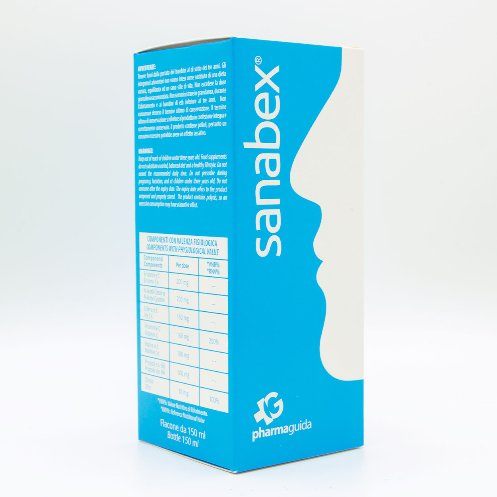

Mosiac capsule e gocce
La lattoferrina Pharmaguida, nel formato adatto alla tua routine.
Capsule: 200 mg di lattoferrina per capsula. Gocce: 100 mg per 1 ml. Entrambe le formulazioni sono senza zinco.
Scopri i kitComposizioni, formati e benefici attribuiti agli ingredienti corretti.

La lattoferrina Pharmaguida, nel formato adatto alla tua routine.
Capsule: 200 mg di lattoferrina per capsula. Gocce: 100 mg per 1 ml. Entrambe le formulazioni sono senza zinco.
Scopri i kit
200 mg di lattoferrina nel complesso Valpalf®.
Valpalf® associa lattoferrina, citrato di sodio e bicarbonato di sodio; una capsula al giorno lontano dai pasti.
Scopri i kit
Quattro ceppi probiotici e 100 mg di lattoferrina.
7 miliardi di UFC per dose. I probiotici favoriscono l’equilibrio della flora intestinale. La capsula può essere aperta.
Scopri i kit
Due ceppi probiotici e zinco, in gocce.
L. rhamnosus GG e B. breve BR03. I probiotici favoriscono l’equilibrio della flora intestinale; lo zinco contribuisce alla normale funzione del sistema immunitario.
Scopri i kit
Probiotici, inulina e 100 mg di lattoferrina.
Quattro ceppi probiotici, 13 miliardi di UFC e 2 g di inulina per dose. I probiotici favoriscono l’equilibrio della flora intestinale.
Scopri i kit
Vitamina D3 2.000 UI e vitamina K2 200 mcg.
La vitamina D contribuisce alla normale funzione del sistema immunitario e al normale assorbimento del calcio; la vitamina K contribuisce al mantenimento di ossa normali.
Scopri i kit
400 UI in quattro gocce, per la sua routine quotidiana.
La vitamina D è necessaria per la normale crescita e lo sviluppo delle ossa nei bambini e contribuisce alla normale funzione del sistema immunitario.
Scopri i kit
Soluzione ipertonica tamponata per la tua igiene nasale.
Dispositivo medico con acqua di mare, sodio ialuronato, D-pantenolo e CM-glucan: decongestiona la mucosa nasale, fluidifica e aiuta a eliminare le secrezioni.
Scopri i kit
200 mg di NAC con erisimo, edera e malva. Per adulti.
Edera e malva favoriscono la fluidità delle secrezioni bronchiali; erisimo e malva un’azione emolliente e lenitiva sulla mucosa oro-faringea e sul tono della voce. Vitamina C e zinco contribuiscono alla normale funzione del sistema immunitario.
Scopri i kit
Miele di acacia ed estratti vegetali. Senza mucolitici.
Erisimo, edera, malva, propoli, vitamina C e zinco. Vitamina C e zinco contribuiscono alla normale funzione del sistema immunitario.
Scopri i kitTesti di concept aggiornati con le schede prodotto, i reel e i video del 21 ottobre 2026. Prima della pubblicazione verifica etichette, dosi, avvertenze e autorizzazioni applicabili. Xnari è un dispositivo medico.
Per ordini superiori a 60 €
24/48 ore sul sito online
Da lunedì a venerdì
Sul sito Pharmaguida online